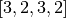
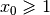

6.8. Filtering
Our local search strategy of the section Local Search Operators is not very efficient: we test lots of infeasible or undesirable candidate solutions. LocalSearchFilters allow to shortcut the solver’s solving and testing mechanism: we can instruct the solver right away to skip a candidate solution.
6.8.1. LocalSearchFilters
LocalSearchFilters instruct the CP solver to skip (or not) the current candidate solution. You can find the declaration and definition in the header constraint_programming/constraint_solveri.h.
There are basically two methods to implement[1]:
virtual bool Accept(const Assignment* delta,
const Assignment* deltadelta) = 0;
virtual void Synchronize(const Assignment* assignment) = 0;
As you can see, these two methods are pure virtual methods and thus must be implemented. The Accept() method returns true if you accept the current candidate solution to be tested by the CP solver and false if you know you can skip this candidate solution. The candidate solution is given in terms of delta and deltadelta. These are provided by the MakeNextNeighbor() of the LocalSearchOperator. The Synchronize() method, lets you synchronize the LocalSearchFilter with the current solution, which allows you to reconstruct the candidate solutions given by the delta Assignment.
If your LocalSearchOperator is incremental, you must notice the CP solver by implementing the IsIncremental() method:
virtual bool IsIncremental() const { return true; }
By default, this method returns false.
6.8.2. Defining a custom LocalSearchFilter
We will filter the dummy example from the file dummy_ls.cc. You can find the code in the file dummy_ls_filtering.cc.
Because we use an OptimizeVar SearchMonitor, we know that each time a feasible solution is found, the CP solver gladly adds a new constraint to prevent other solutions with the same objective value from being feasible. Thus, candidate solutions with the same or higher objective value will be rejected by the CP solver. Let’s help the busy solver and tell him right away to discard such candidate solutions.
We are using IntVars and thus we’ll inherit from IntVarLocalSearchFilter and instead of implementing the Synchronize() method, we’ll implement the specialized OnSynchronize() method.
The constructor of the ObjectiveValueFilter class is straightforward:
ObjectiveValueFilter(const std::vector<IntVar*>& vars) :
IntVarLocalSearchFilter(vars.data(), vars.size()), obj_(0) {}
obj_ is an int64 to keep the objective value of the current solution.
Let’s synchronize our filter with the objective value of the current solution:
virtual void OnSynchronize() {
obj_ = 0;
for (int i = 0; i < Size(); ++i) {
obj_ += Value(i);
}
}
Several helper methods are defined in the IntVarLocalSearchFilter class:
- int64 Value(int index) const: returns the value of the
 variable of the current
solution. These values are automatically updated when Synchronize() is called;
variable of the current
solution. These values are automatically updated when Synchronize() is called; - IntVar* Var(int index) const: returns the variable given in the std::vector;
- bool FindIndex(const IntVar* const var, int64* index) const: returns a bool to indicate if the
variable was found. If yes, you can use the index variable;
- int Size() const: returns the size of the std::vector of IntVars given to the constructor of the IntVarLocalSearchFilter class.
To test a candidate solution, we use the delta, and sum the changed value of the objective function:
virtual bool Accept(const Assignment* delta,
const Assignment* unused_deltadelta) {
const Assignment::IntContainer& solution_delta =
delta->IntVarContainer();
const int solution_delta_size = solution_delta.Size();
int64 new_obj = obj_;
for (int index = 0; index < solution_delta_size; ++index) {
int64 touched_var = -1;
FindIndex(solution_delta.Element(index).Var(), &touched_var);
const int64 old_value = Value(touched_var);
const int64 new_value = solution_delta.Element(index).Value();
new_obj += new_value - old_value;
}
return new_obj < obj_;
}
First, we acquire the IntContainer and its size. Each Assignment has containers to keep its IntVars, IntervalVars and SequenceVars (more precisely pointers to). To access those containers, use the corresponding Container() methods if you don’t want to change their content, use the corresponding Mutable...Container() method if you want to change their content. For instance, to change the SequenceVars, use the MutableSequenceVarContainer() method.
For the sake of efficiency, Assignment contains a light version of the variables. For instance, an ÌntVarContainer contains IntVarElements and the call to
FindIndex(solution_delta.Element(index).Var(), &touched_var);
simply returns the LocalSearchFilter‘s index in touched_var of the corresponding variable element with index index in the Assignment.
We only accept a candidate solution if its objective value is better that the one of the current solution:
return new_obj < obj_;
In the DummyLS() method, we add the filter as follows:
...
LocalSearchFilter * const filter = s.RevAlloc(
new ObjectiveValueFilter(vars));
std::vector<LocalSearchFilter*> filters;
filters.push_back(filter);
...
ls_params = s.MakeLocalSearchPhaseParameters(..., filters);
If we try again the dummy instance :
./dummy_ls_filtering -n=4 -initial_phase=false
we obtain:
..., neighbors = 23, filtered neighbors = 23,
accepted neighbors = 9, ...
which is exactly the same output without the filtering. Of course! Our LocalSearchOperator systematically produces candidate solutions with a smaller objective value than the current solution (the same value minus one)! Does it mean that we have worked for nothing? Well, this is a dummy example, isn’t? Our main purpose was to learn how to write a custom LocalSearchFilter and we did it!
OK, you’re not satisfied and neither are we. We know that  and that the other variables
must be equal or greater than  .
.
Let’s write a LocalSearchFilter that filters infeasible candidate solutions. We don’t need to provide an OnSyncronize() method. Here is our version of the Accept() method:
virtual bool Accept(const Assignment* delta,
const Assignment* deltadelta) {
const Assignment::IntContainer& solution_delta =
delta->IntVarContainer();
const int solution_delta_size = solution_delta.Size();
for (int index = 0; index < solution_delta_size; ++index) {
const IntVarElement& element = solution_delta.Element(index);
if (!element.Var()->Contains(element.Value())) {
return false;
}
}
return true;
}
Aha, you probably expected an ad hoc solution rather than the general solution above, didn’t you?[2].
We now obtain:
..., neighbors = 23, filtered neighbors = 9,
accepted neighbors = 9, ...
Of course, we could have improved our LocalSearchOperator so that it doesn’t produce such infeasible solutions!
6.8.3. Interesting LocalSearchFilters
There exist some general LocalSearchFilters in or-tools: ObjectiveFilter (and some sub-classes) and VariableDomainFilter.
It is easy to add a VariableDomainFilter, simply use
LocalSearchFilter* Solver::MakeVariableDomainFilter();
As its name implies, it rejects assignments to values outside the domain of the variables.
The ObjectiveFilter is more interesting and exists in different flavors depending on:
the type of move that is accepted based on the current objective value:
The different possibilities are given by the LocalSearchFilterBound enum:
- GE: Move is accepted when the candidate objective value >= objective.Min;
- LE: Move is accepted when the candidate objective value <= objective.Max;
- EQ: Move is accepted when the current objective value is in the interval objective.Min ... objective.Max.
the type of operation used in the objective function:
The different possibilities are given in the LocalSearchOperation enum and concern the variables given to the MakeLocalSearchObjectiveFilter() method:
- SUM: The objective is the sum of the variables;
- PROD: The objective is the product of the variables;
- MAX: The objective is the max of the variables;
- MIN: The objective is the min of the variables.
the callbacks used: we refer the curious reader to the code in the file constraint_programming/local_search.cc for more details about different available callbacks.
For all these versions, the factory method is MakeLocalSearchObjectiveFilter(). Again, we refer the reader to the code to see all available refinements.
Footnotes
| [1] | For IntVar, the specialized IntVarLocalSearchFilter offers convenient methods and you should rather implement the OnSynchronize() method that is called at the end of the Synchronize() method. |
| [2] | To be fair, this solution is not as general as it should be. We didn’t take into account the fact that some IntervalVar variables can be non active but for IntVars and SequenceVars it works well. |
Google or-tools |
User's Manual
Google search
Welcome
Tutorial examples
Current chapter
6. Local Search: the Job-Shop Problem
Previous section
6.7. The Job-Shop Problem: and now with Local Search!